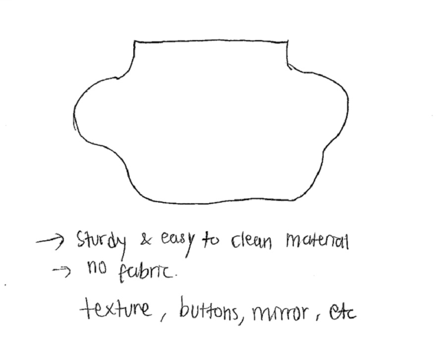

Semi-permanent exhibition at the Maryland Science Center's Kids Room (2016-2019)
Solo project supervised by Steven Valenziano
Underwater touch wall is a tactile wall for kids age 3-5 designed for the Kids Room of Maryland Science Center Museum in 2016. As an intern at the time I had to come up with the idea to create an educational exhibition for the space they have in the Kids Room underwater cave, which was a 3ft tall, 3ft wide, and 5ft long cave for children to play around.
The piece was made to be modular to be able to be installed inside the cave and to be replaced when it’s broken. The materials, gears, and fasteners were selected, prototyped, and tested to be safe for kids.
Following are the technical plans (done in Solidworks) and sketch process from brainstorming to finish.
Modularity for easier installation and replacement.
The chains used for the starfish mechanism are made of v-belt that allows the pulley to slide when given extra force, preventing the startfish to pinch and hurt children's fingers.
Digitally illustrated on Adobe Photoshop with Wacom Cintiq. The illustration then got printed and mounted on the fabricated pieces. Details of the illustration can be viewedhere, on my illustration page.
This was the instruction given during the project assignment from the Kids Room team, with scribble of notes taken during the meeting
The very rough shape of the work space sketched before site survey.